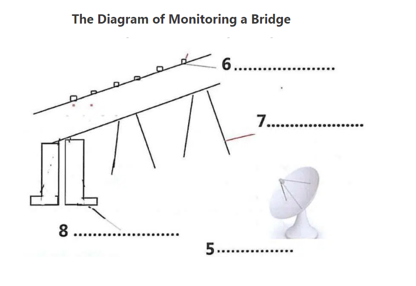

Keep a Watchful Eye on the Bridges
A Most road and rail bridges are only inspected visually, if at all. Every few months, engineers have to clamber over the structure in an attempt to find problems before the bridge shows obvious signs of damage. Technologies developed at Los Alamos National Laboratory, New Mexico, and Texas A&M University may replace these surveys with microwave sensors that constantly monitor the condition of bridges.
B “The device uses microwaves to measure the distance between the sensor and the bridge, much like radar does,” says Albert Migliori, a Los Alamos physicist “Any load on the bridge – such as traffic induces displacements, which change that distance as the bridge moves up and down.” By monitoring these movements over several minutes, the researchers can find out how the bridge resonates. Changes in its behaviour can give an early warning of damage.
C The Interstate 40 bridge over the Rio Grande river in Albuquerque provided the researchers with a rare opportunity to text their ideas. Chuck Farrar, an engineer at Los Alamos, explains: “The New Mexico authorities decided to raze this bridge and replace it. We were able to mount instruments on it, test it under various load conditions and even inflict damage just before it was demolished.” In the 1960s and 1970s, 2500 similar bridges were built in the US. They have two steel girders supporting the load in each section. Highway experts know that this design is “fracture critical” because a failure in either girder would cause the bridge to fail.
D After setting up the microwave dish on the ground below the bridge, the Los Alamos team installed conventional accelerometers at several points along the span to measure its motion. They then tested the bridge while traffic roared across it and while subjecting it to pounding from a “shaker”, which delivered precise punches to a specific point on the road.
E “We then created damage that we hoped would simulate fatigue cracks that can occur in steel girders,” says Farrar. They first cut a slot about 60 centimetres long in the middle of one girder. They then extended the cut until it reached the bottom of the girder and finally they cut across the flange – the bottom of the girder’s “I” shape.
F The initial, crude analysis of the bridge’s behaviour, based on the frequency at which the bridge resonates, did not indicate that anything was wrong until the flange was damaged. But later the data were reanalysed with algorithms that took into account changes in the mode shapes of the structure – shapes that the structure takes on when excited at a particular frequency. These more sophisticated algorithms, which were developed by Norris Stubbs at Texas A&M University, successfully identified and located the damage caused by the initial cut.
G “When any structure vibrates, the energy is distributed throughout with some points not moving, while others vibrate strongly at various frequencies,” says Stubbs. “My algorithms use pattern recognition to detect changes in the distribution of this energy.” NASA already uses Stubbs’ method to check the behaviour of the body flap that slows space shuttles down after they land.
H A commercial system based on the Los Alamos hardware is now available, complete with the Stubbs algorithms, from the Quatro Corporation in Albuquerque for about $100,000. Tim Darling, another Los Alamos physicist working on the microwave interferometer with Migliori, says that as the electronics become cheaper, a microwave inspection system will eventually be applied to most large bridges in the US. “In a decade I would like to see a battery or solar-powered package mounted under each bridge, scanning it every day to detect changes,” he says.
Questions 1-4
Choose the correct letter, A, B, C or D.
Write your answers in boxes 1-4 on your answer sheet.
1 How did the traditional way to prevent damage of the bridges before the invention of new monitoring system
A Bridges has to be tested in every movement on two points.
B Bridges has to be closely monitored by microwave devices.
C Bridges has already been monitored by sensors.
D Bridges has to be frequently inspected by professional workers with naked eyes.
2 How does the new microwave monitors find out the problems of bridges
A by changeling the distance between the positions of devices
B by controlling the traffic flow on the bridges
C by monitoring the distance caused by traffic between two points
D by displacement of the several critical parts in the bridges
3 Why did the expert believe there is a problem for the design called “fracture critical”
A Engineers failed to apply the newly developed construction materials.
B There was not enough finance to repair the bridges.
C The supporting parts of the bridges may crack and cause the bridge to fail.
D There was bigger traffic load conditions than the designers had anticipated.
4 Defect was not recognized by a basic method in the beginning
A until the mid of faces of bridges has fractures.
B until the damage appears along and down to the flanges.
C until the points on the road have been punched.
D until the frequency of resonates appears disordered.
Questions 5-8
Filling the blanks in the diagram labels.
Write the correct answer in boxes 5-8 on your answer sheet.

5
6
7
8
Questions 9-13
The reading Passage has eight paragraphs, A–H.
Which paragraph contains the following information?
Write the correct letter, A–H, in boxes 9–13 on your answer sheet.
9 how is the pressure that they have many a great chance to test bridges
10 a ten-year positive change for microwave device
11 the chance they get a honorable contract
12 explanation of the mechanism for the new microwave monitoring to work
13 how is the damage deliberately created by the researchers
---End of the Test---
Please Submit to view your score, solution and explanations.